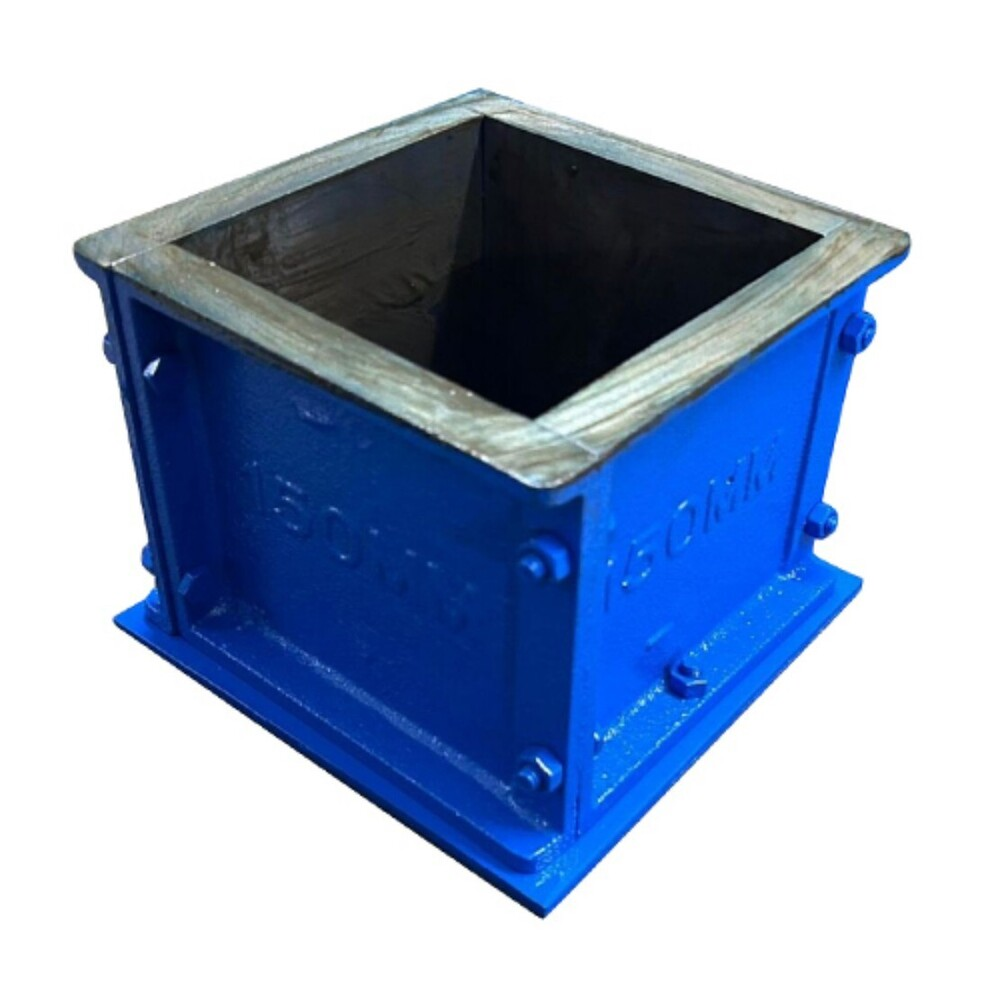
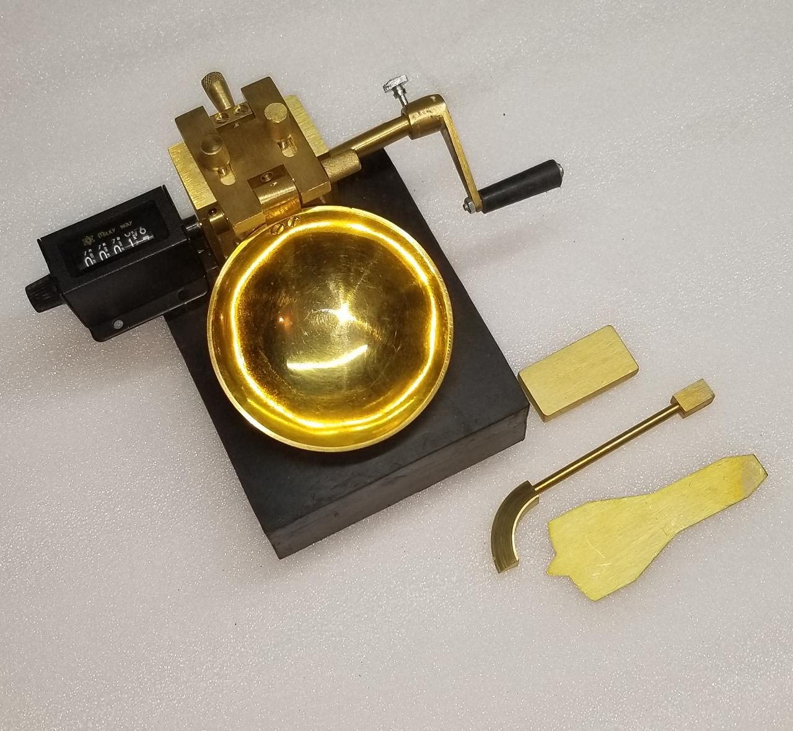
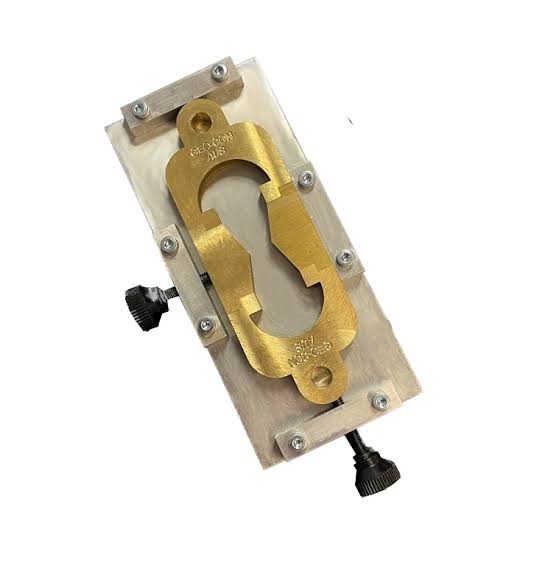
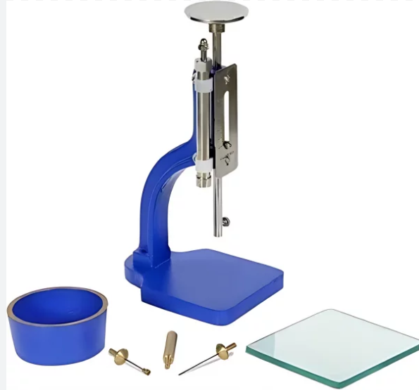
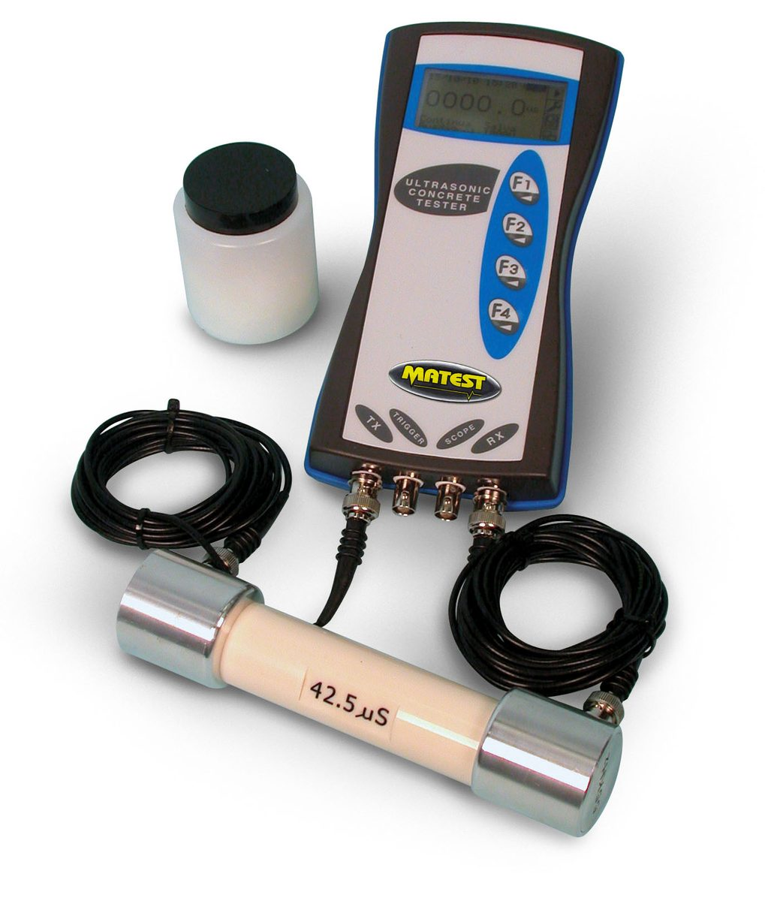
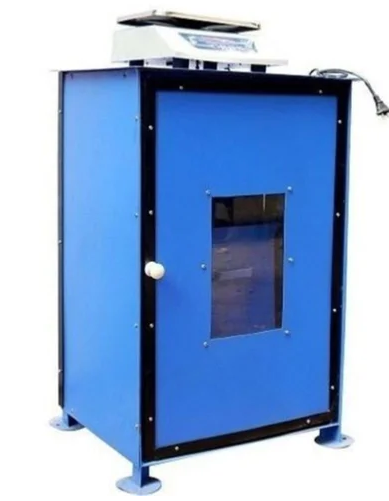

How to Set Up a Complete Civil Quality Laboratory
A step-by-step guide to planning, equipping, and commissioning a civil quality lab conforming to IS standards.
Read More →Accurion Technologies manufactures and supplies high-precision Civil Quality Laboratory Equipment across India. We also provide certified NABL-accredited calibration solutions.
From individual testing apparatus to turnkey laboratory setup, we serve contractors, RMC plants, testing labs, and engineering institutions with end-to-end technical support.

Industry-standard testing equipment for every civil engineering laboratory requirement

Cube moulds, CTM, slump cones, vibrating tables & more
View Products →
Proctor compaction, Atterberg limits, CBR, consolidation
View Products →
Penetration, softening point, ductility, flash point testing
View Products →
Vicat apparatus, Blaine air permeability, Le Chatelier
View Products →
Rebound hammer, UPV tester, rebar locator & more
View Products →
Precision, analytical, industrial & high-precision balances
View Products →
Aquasol kits, turbidity meters, pH meters, TDS meters
View Products →Explore our complete catalogue including glassware, moulds, chemicals & consumables
Browse All →Complete source for Testing Equipment and NABL-Accredited Calibration without dealing with multiple vendors.
Reliable supply network delivering promptly to construction sites, labs, and institutions nationwide.
Expert support team offering customized equipment solutions for your project specifications.
All calibrated instruments delivered with ISO/IEC 17025 traceable certificates for audit compliance.
Trusted partner to infrastructure developers, test labs, and educational institutions across India.
Contact us today for a custom quote or lab setup consultation.
Contact Us TodayBeyond equipment supply — we provide end-to-end laboratory solutions
Professional calibration services for all civil lab instruments. We ensure your testing apparatus meets highest precision standards.
Learn MoreTurnkey lab setup from equipment selection and layout planning to installation, commissioning, and staff training.
Learn MoreExpert repair and preventive maintenance for laboratory machines. Minimize downtime and keep testing accurate.
Learn MoreInsights, guides, and technical resources for civil laboratory professionals
A step-by-step guide to planning, equipping, and commissioning a civil quality lab conforming to IS standards.
Read More →
NABL accreditation ensures traceable measurement accuracy. Learn the core requirements and audit benefits.
Read More →
Why rigorous material testing is essential for durable infrastructure and how proper equipment prevents failures.
Read More →Everything you need to know about our testing equipment, NABL calibration, and lab setup services.
Accurion Technologies supplies testing equipment for Concrete, Soil, Cement, Bitumen, Aggregates, Non-Destructive Testing (NDT), Water Quality, High-Precision Lab Balances, Moulds, Glassware, and Reagents conforming to IS, ASTM, and BS standards.
Yes. We provide NABL-accredited calibration services with ISO/IEC 17025 traceability for Compression Testing Machines (CTM), UTMs, proving rings, digital load cells, electronic balances, and dimensional instruments.
Yes. We deliver turnkey lab setup for construction contractors, infrastructure developers, and colleges. Our service covers equipment selection, civil layout planning, Pan-India logistics, on-site commissioning, and staff training.
We provide Pan-India dispatch from our Delhi facility, ensuring prompt, insured, and secure transit directly to project sites and testing laboratories nationwide.
Submit our online contact form, call us directly at +91 83838 51980, or click WhatsApp to chat instantly with our sales team.